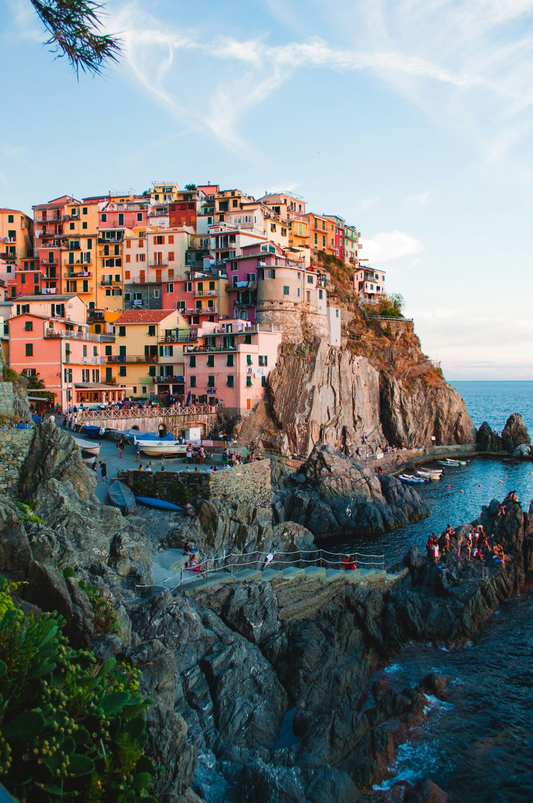
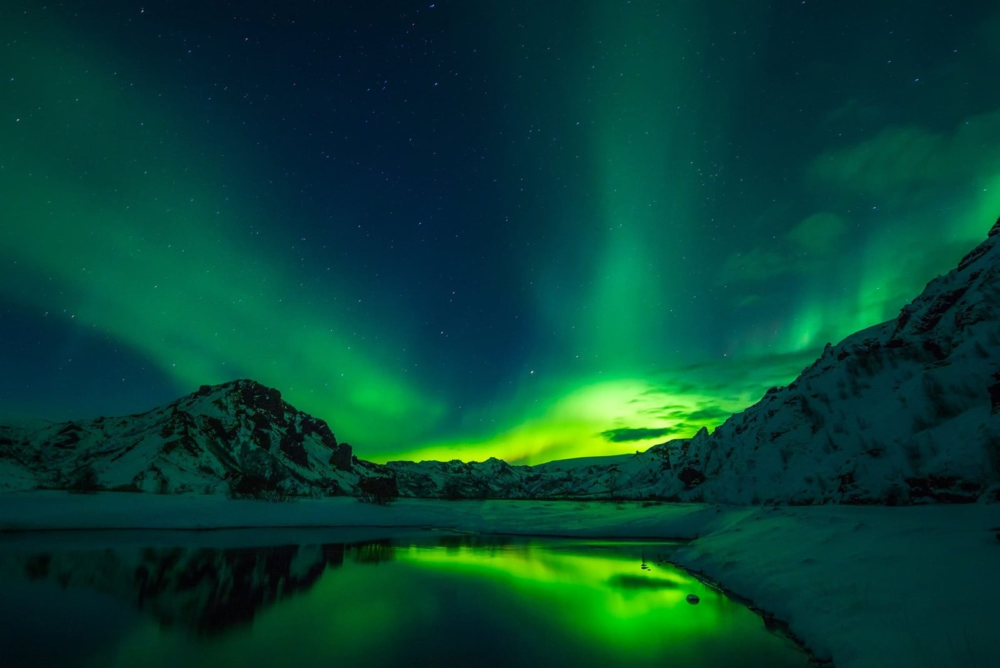
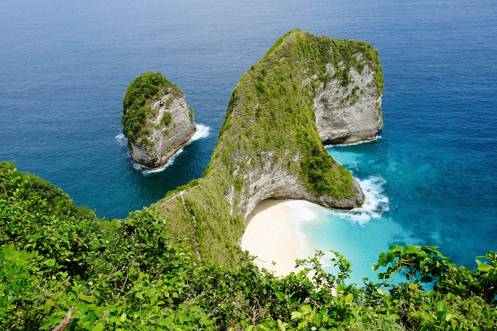

Европа
Медленные дни на побережье Италии
Небольшие города, морской воздух и длинные прогулки у воды. Маршрут для тех, кто любит путешествовать без спешки.
Журнал о путешествиях
Истории о местах, в которые хочется вернуться, маршруты и простые советы для самостоятельных путешествий.
Вдохновиться историями«Лучший маршрут — тот, после которого остаётся желание увидеть больше»
Каждое путешествие меняет что-то в маршруте, но больше — в нас самих.
Собрали идеи для следующего путешествия.Читать и мечтать

Небольшие города, морской воздух и длинные прогулки у воды. Маршрут для тех, кто любит путешествовать без спешки.

Горы, озёра и дороги, на которых хочется останавливаться снова и снова. Идея для путешествия на машине.

Как почувствовать ритм острова, найти спокойные места и подготовиться к поездке без лишней суеты.
Куда отправимся?
Короткий ориентир по направлениям, который помогает выбрать настроение поездки.
Перейти к советамНебольшая подготовка
Хорошая поездка начинается не с идеального плана, а с нескольких продуманных мелочей.
Получить больше советовПланируйте главное, но не заполняйте расписание до последней минуты.
Универсальная одежда и необходимые документы сэкономят время перед выездом.
Несколько слов на местном языке и уважение к обычаям делают поездку приятнее.